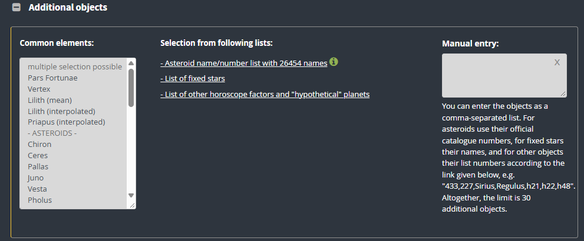

Siz de benim gibi astrolojiyle ilgileniyorsanız, sadece gezegen ve açıların tek başına yeterli olmadığını fark etmişsinizdir. Örneğin "Jüpiter 5. evinizde, ün ve şöhrete açıksınız" gibi genellemelerle sıkça karşılaşırız — ama gerçekten tek gösterge bu mudur?
Bu soruyu yanıtlamadan önce astrolojinin ne olduğunu kısaca tanımlamak gerekir. Astroloji, gezegen ve yıldızların insan karakteri, ilişkileri ve yeryüzündeki olaylar üzerindeki etkilerini yorumlayan bir sistemdir. Net ve kesin sonuçlar sunmaz; belirli astrolojik hesaplamalara dayanarak olasılıklı yorumlar yapar. Peki bir haritada "ün ve şöhret" konusunda gezegenler dışında başka neye bakılabilir? İşte ün ve şöhret potansiyeli veren asteroidler:
Fama (408): Şöhretin yayılma gücünü ve toplumdaki itibarın niteliğini belirler. Roma mitolojisindeki haber tanrıçasının sembolüdür.
Burçlar: Fama Koç, Aslan, Yay, Boğa, Oğlak, Terazi ve İkizler'de şöhreti dışa dönük ve hızlı yayarken; Yengeç, Balık ve Başak'ta daha temkinli ve içe dönük çalışır.
Apollo (1862): Doğuştan gelen ilahi yaratıcılığı, çekim gücünü ve liderlik enerjisini somut başarıya dönüştürür.
Burçlar: Apollo Ateş burçlarında (Koç, Aslan, Yay) karizmatik bir liderlik ve sahne ışığı verirken; Toprak burçlarında bu yeteneği somut, kalıcı bir esere dönüştürür.
Klio (84): Geçici popülerlik yerine adını tarihe yazdıran kalıcı eserlerle tarihe geçen, yazılan ve belgelenen kalıcı şöhreti simgeler.
Burçlar: Klio İkizler ve Başak burçlarında zihinsel, yazılı ve akademik alanda iz bırakan bir popülerlik getirir.
Varuna (20000): Yüksek sorumluluk, emek ve sınavlarla kazanılan toplum önündeki sarsılmaz itibarı temsil eder.
Burçlar: Varuna Oğlak ve Akrep gibi disiplinli ve derin burçlarda kalıcı bir miras ve otorite yaratma potansiyelini zirveye taşır.
Talent (33154): Doğuştan gelen zihinsel, sanatsal veya pratik becerilerin potansiyelini gösterir.
Burçlar: Talent hava burçlarında (İkizler, Terazi, Kova) zihinsel ve sosyal yetenekleri; Su burçlarında (Yengeç, Akrep, Balık) ise güçlü sezgisel ve sanatsal yetenekleri besler.
Bella (695) & Aphrodite (1388): Kişiye girdiği ortama damga vuran büyüleyici bir aura, estetik algı ve "yıldız ışığı" kazandırır.
Burçlar: Bella Boğa ve Terazi'de doğal bir fiziksel çekim ve estetik başarı verirken; Aphrodite Aslan ve Akrep'te girdiği anda fark edilen baskın bir aura yaratır.
Ünlülerin Haritalarında Asteroidler
Bu asteroidlerin baskın olduğu haritalar, "yıldız ışığı", yetenek ve kalıcı şöhretin birleşimine güzel örnekler sunar. Aşağıda, bu asteroidlerin özellikle 1. ve 10. evde, Güneş ve Venüs'le ya da MC ile kavuşumlarda öne çıktığı ünlü ve güzel isimleri listeledim.
Dünyadan isimler
Marilyn Monroe: Haritasında Aphrodite, Bella ve Fama öne çıkar. 1. evi (ASC) ve 10. evi Venüs ile Güneş'in etkisindedir. Aphrodite ve Bella'nın Yükselen ve Güneş'le kurduğu güçlü temaslar ona zamansız bir görsel cazibe ve ikonik bir "yıldız ışığı" verir. Fama'nın Tepe Noktası'na (MC) yakınlığı adının dünyaca duyulmasını sağlar.
Angelina Jolie: Apollo, Aphrodite ve Fama'nın etkisi altındadır. Tam Yükselen derecesindeki Venüs kavuşumu ve ona eşlik eden Aphrodite ona büyüleyici bir güzellik verir. Apollo ve Fama'nın Tepe Noktası (10. ev) bağlantısı ise kitleleri peşinden sürükleyen bir karizma ve küresel şöhret getirir.
Türkiye'den isimler
Türkan Şoray: "Sultan" unvanını taşıyan sanatçının haritasında Aphrodite ve Bella vurgusu, bakışlarındaki ve duruşundaki meşhur cazibeyi açıklar. Klio'nun Merkür ve MC ile ilişkisi onu Türk sinema tarihine unutulmaz bir ikon olarak kaydettirir.
Hande Erçel: Yay ve Güneş vurgulu, yüksek medyatik enerjili haritasında Apollo, girdiği ortama anında yıldız ışığı yayar. Fama ve Bella'nın kişisel gezegenlerle etkileşimi de sosyal medyadaki ve ekrandaki uluslararası popülerliğini besler.
Küçük not: Yabancı ünlülerin aksine Türkiye'deki isimlerin doğum saatleri genellikle kesin olarak bilinmiyor. Bu yüzden yerli örneklerde ev konumlarına değil, Güneş ve Venüs merkezli asteroid enerjilerinin hayatlarındaki ve ekran yüzlerindeki arketipsel yansımalarına odaklandım.
Kendi Haritanızda Nasıl Bakarsınız?
Bunun için en güvenilir kaynaklardan biri astro.com. Adımlar şöyle:
- Siteye girin ve doğum bilgilerinizi ekleyin, ardından sırayla Charts and Calculations, sonrasında Extended Chart Selection bölümüne gidin.
- Sections "round" seçiliyken sayfanın altındaki Manual entry alanını bulun (aşağıdaki görselde görebilirsiniz).
- Alana istediğiniz sırayla şu numaraları yazın: 1862, 84, 20000, 33154, 1388, 695, 408
- Show the Chart düğmesine tıklayın.

Böylece haritanızdaki ün ve şöhret asteroidlerini görürsünüz.
Yazarın notu: Bu asteroidlerin haritada bulunması tek başına net bir sonuç göstermez. Asteroidin düştüğü evi, gezegenlerle temaslarını ve açılarını birlikte incelemek gerekir. Astroloji bilginiz azda olsa varsa yapay zekadan yardım alabilir ya da bir astroloğa danışabilirsiniz.